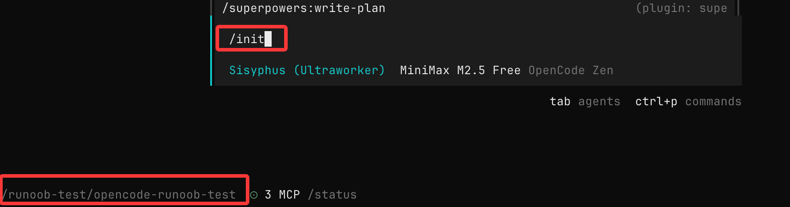

Primer uso de OpenCode
Después de instalar Claude Code y configurar la API, podemos empezar a usarlo.
Primero puedes entrar en el directorio del proyecto:
cd /path/to/project
Luego ejecuta OpenCode:
opencode
Ejecuta el siguiente comando para inicializar OpenCode en el proyecto:
/init
OpenCode analizará tu proyecto y creará un archivo AGENTS.md en el directorio raíz del proyecto.
Para salir de OpenCode, usa el siguiente comando:
/exit
A continuación, usaremos un proyecto de ejemplo muy sencillo para completar el primer uso.
Crea un proyecto de ejemplo:
mkdir opencode-runoob-test cd opencode-runoob-test
Luego ejecuta OpenCode:
opencode
Ejecuta el siguiente comando para inicializar:
/init

Crea un archivo simple:
touch main.py
Escribe el siguiente contenido:
def add(a, b):
return a + b
Haz que OpenCode explique el código
Introduce:
解释 main.py 这个文件在做什么，用新手能理解的方式说明
OpenCode leerá el código del directorio actual y dará una explicación.

Haz que OpenCode te ayude a modificar el código
Continúa escribiendo en la sesión de OpenCode:
Añade anotaciones de tipo a esta función y agrega manejo básico de errores.
OpenCode dará sugerencias de modificación, que normalmente incluyen:
- El código modificado
- Explicación del motivo de la modificación

@Símbolo
Uso@Puedes buscar y referenciar rápidamente archivos del proyecto sin necesidad de copiar el código manualmente; es adecuado para entender proyectos desconocidos.
Por ejemplo, @main.py se puede asociar a este archivo:

Formas básicas de interacción con OpenCode
Tipos de instrucciones comunes
Puedes dividir las instrucciones para Claude Code en tres categorías:
1. Explicativas
Explica este código. ¿Por qué está escrita esta función así?
2. De modificación
Ayúdame a refactorizar esta función. Divídela en varias funciones más pequeñas.
3. De generación
Agrega un caso de prueba. Añade salida de registros (logs).
Una plantilla de instrucción simple pero útil:
在不改变现有行为的前提下， 帮我优化 XXX 文件的可读性， 并说明你做了哪些修改。
Agregar nuevas funciones (flujo recomendado)
Para requisitos complejos, se recomienda un método de tres pasos:
- Primero elaborar un plan
- Luego optimizar la solución
- Finalmente ejecutar la implementación
1. Elaborar un plan (modo Plan)
PulsaTabla tecla para cambiar al modo Plan:

En este momento OpenCodeno modificará el código, solo proporcionará un plan de implementación.
Requisito de ejemplo
Cuando un usuario elimina una nota, queremos marcarla como eliminada en la base de datos. Luego, agrega una nueva página para mostrar las notas eliminadas recientemente. En esa página, los usuarios pueden restaurar notas o eliminarlas definitivamente.
Explicación:
- Cuanto más detallada sea la descripción, más preciso será el resultado
- Puedes describir los requisitos como si estuvieras comunicándote con un colega
2. Optimizar e iterar el plan
Después de que OpenCode presente la solución, puedes seguir complementando:
Queremos que esta nueva página utilice un diseño que hemos usado antes. Consulta esta imagen e impleméntala siguiendo ese estilo.
Consejo:
- Puedes arrastrar imágenes al terminal como referencia
- Puedes añadir reglas de negocio, requisitos de UI, etc.
En esencia, es hacer una revisión de diseño junto con la IA.
3. Ejecutar la implementación (modo Build)
Pulsa de nuevoTabpara volver al modo de ejecución:
Luego introduce:
Muy bien, comencemos a implementar según este plan.
OpenCode hará:
- Creará/modificará el código
- Actualizará los archivos relacionados
- Ejecutará los comandos necesarios
Modificación directa (adecuada para requisitos simples)
Para tareas simples, puedes omitir el plan y ejecutar directamente:
给 /settings 路由添加认证逻辑。 参考 @packages/functions/src/notes.ts 中的实现方式， 并在 @packages/functions/src/settings.ts 中实现相同逻辑。
Sugerencia:
- Proporciona la ruta del código de referencia
- Explica el efecto deseado
Deshacer y rehacer
Si el resultado de la modificación no coincide con lo esperado, puedes usar:
Deshacer modificaciones
/undo
Función:
- Revertir los cambios de código
- Restaurar el estado anterior de la conversación
Rehacer modificaciones
/redo
Aviso:
- /undo se puede usar varias veces
- Adecuado para probar diferentes soluciones repetidamente
Compartir conversación
Puedes compartir la sesión actual con el equipo:
/share
Después de ejecutarlo:
- Genera un enlace para compartir
- Se copia automáticamente al portapapeles
Nota:
- La conversación no se comparte automáticamente por defecto
Consejos de uso
1. Trátalo como a un ingeniero junior
- Explica claramente los requisitos
- Proporciona contexto
- No uses expresiones ambiguas
2. Prioriza el uso del modo Plan
- Evita modificaciones erróneas
- Revisa la solución antes de ejecutarla
3. Usa más referencias a archivos
- @ruta puede mejorar enormemente la precisión
4. Itera en pasos pequeños
- No hagas requisitos demasiado complejos de una sola vez
- Divide las tareas y complétalas paso a paso
La esencia del uso de OpenCode es: impulsar el flujo de desarrollo mediante conversaciones, en lugar de escribir código manualmente.
Otras extensiones